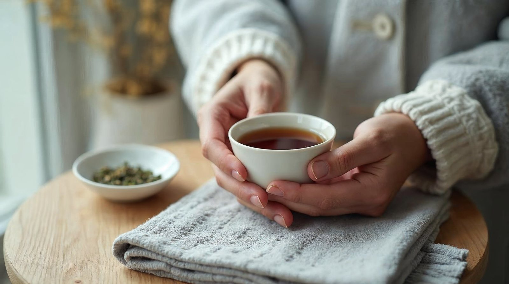
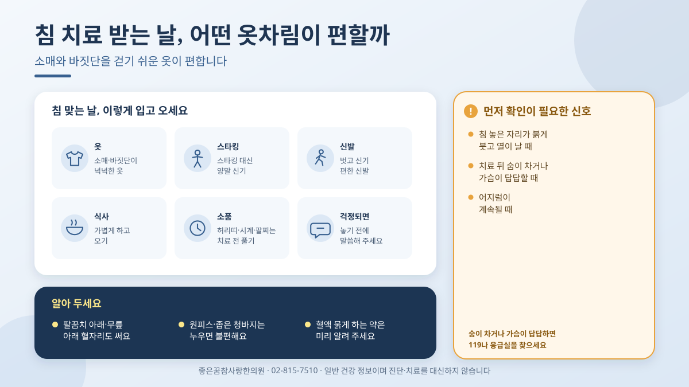

이종호 한의사 감수좋은꿈참사랑한의원 대표원장 (한의사 면허번호 19769)발행 2026-11-25 · 수정 2026-11-25
이 글의 차례
침 치료를 처음 받는 날 무엇을 입고 가야 하는지 묻는 분이 많습니다. 침은 불편한 부위뿐 아니라 팔다리에도 놓는 경우가 있어, 편하게 걷어 올릴 수 있는 옷이면 준비가 됩니다.
예를 들어 허리가 불편해 오셨더라도 손등이나 발목 근처의 혈자리를 함께 쓰는 경우가 있습니다. 그래서 치료 부위만이 아니라 팔꿈치 아래와 무릎 아래를 편하게 걷을 수 있는 옷이면 준비가 수월합니다. 원피스나 통이 좁은 청바지는 누운 자세에서 불편할 수 있습니다.
왜 옷차림이 중요할까요
- 팔꿈치 아래, 무릎 아래 혈자리를 쓰는 경우가 많습니다.
- 꽉 끼는 옷은 누워 있는 동안 불편할 수 있습니다.
- 스타킹은 벗고 신기 번거롭습니다.
- 편안해야 긴장을 덜고 누워 있기 쉽습니다.
- 허리띠나 몸을 조이는 속옷은 누워 있는 동안 답답할 수 있습니다.
먼저 이렇게 여쭙니다
- 오늘 가장 불편한 부위는 어디인가요?
- 침이 처음이신가요?
- 바늘에 대한 걱정이 있나요?
- 혈액을 묽게 하는 약을 드시나요?
일상에서 먼저 해 볼 수 있는 것
- 소매와 바짓단이 넉넉한 옷 입기
- 스타킹 대신 양말 신기
- 벗고 신기 편한 신발 고르기
- 식사는 가볍게 하고 오기
- 허리띠와 시계, 팔찌는 치료 전에 풀어 두기
한의원에서 함께 살필 수 있는 경우
- 침이 처음이라 긴장되는 경우 놓기 전에 천천히 설명해 드립니다.
- 같은 부위 통증이 반복되는 경우 생활 동작을 함께 살핍니다.
- 치료 뒤 뻐근함이 이어지는 경우 다음 진료에서 반응을 함께 봅니다.
좋은꿈참사랑한의원에서는 먼저 불편한 상황을 듣고, 필요하다고 판단될 때 진찰한 뒤 침·약침·추나 등을 상태에 맞춰 정합니다. 처음이라 걱정되시면 놓기 전에 말씀해 주세요.
헷갈리기 쉬운 점
아픈 곳에만 침을 놓는 것은 아니어서, 어깨가 아픈데 손이나 다리에 침을 놓는 것을 보고 놀라시는 분이 있습니다. 궁금하면 그 자리에서 바로 물어보셔도 됩니다.
자주 하는 오해
- 침을 맞으려면 옷을 많이 벗어야 한다고 걱정하는 분이 있지만, 대개 소매와 바짓단을 걷는 정도로 준비가 됩니다. 등이나 허리처럼 걷기 어려운 부위는 그날 상황에 맞춰 방법을 설명드립니다.
- 편한 옷이면 무엇이든 괜찮다고 여기기 쉽지만, 통이 좁은 운동복 하의는 무릎 위로 올라가지 않는 경우가 있습니다. 입고 오기 전에 한 번 걷어 올려 보세요.

예를 들면 이런 경우입니다
- 예를 들어 퇴근길에 정장 차림으로 오신 경우라면, 셔츠 소매를 팔꿈치 위까지 걷을 수 있는지, 바지가 무릎 위까지 올라가는지 먼저 확인합니다. 걷기 어려우면 그날 쓸 수 있는 자리를 중심으로 정하며, 갈아입을 옷이 준비되어 있는지는 방문 전 전화로 확인해 주세요.
- 예를 들어 겨울에 내복이나 기모 레깅스를 겹쳐 입고 오신 경우라면, 겹친 옷을 한꺼번에 무릎 위로 걷기 어려울 수 있습니다. 겉옷과 겹옷을 벗기 쉬운 순서로 입고 오시면 준비가 빨라집니다.
- 예를 들어 목과 어깨 쪽에 침을 놓는 경우라면, 목까지 올라오는 터틀넥보다는 목둘레가 넉넉하고 단추나 지퍼로 여닫을 수 있는 옷이 편합니다.
스스로 점검해 보세요
- 소매를 팔꿈치 위까지 걷어 올릴 수 있다
- 바짓단을 무릎 위까지 올릴 수 있다
- 목둘레가 넉넉해 목과 어깨가 쉽게 드러난다
- 스타킹이나 압박 양말 없이 왔다
- 허리띠·시계·팔찌를 바로 풀 수 있다
- 오늘 혈액을 묽게 하는 약을 먹었는지 알고 있다
- 너무 오래 굶지 않고 가볍게 먹고 왔다
해당하지 않는 항목이 있어도 괜찮습니다. 진료 시작 때 말씀해 주시면 그날 옷차림에 맞춰 자세와 침 놓을 자리를 함께 정합니다.
이렇게 기록해 오시면 상담이 쉬워집니다
- 불편한 부위와 동작
- 바늘이나 피에 대한 걱정
- 복용 중인 약, 특히 혈액을 묽게 하는 약
- 지난 치료 뒤의 느낌
- 치료 중 불편했던 옷이나 자세
이런 증상은 먼저 확인이 필요합니다
- 침 놓은 자리가 붉게 붓고 열이 나는 경우
- 치료 뒤 숨이 차거나 가슴이 답답한 경우
- 어지럼이 계속되는 경우
복용 중인 약은 처방한 의사와 상의 없이 줄이거나 끊지 않습니다. 숨이 차거나 가슴이 답답하면 응급실을 찾으세요.
얼마나 지켜보고, 언제 확인하면 좋을까요
- 침 놓은 자리의 작은 멍이나 뻐근함은 며칠 사이 옅어지는 경우가 많아, 그동안 크기와 색을 지켜보셔도 됩니다.
- 멍이 일주일 넘게 옅어지지 않거나 점점 넓어진다면 다음 예약 전에 연락해 주세요.
- 침 맞은 자리가 붉게 붓고 열감이 하루 이틀 사이 더 심해진다면 바로 연락해 주세요.
- 치료 뒤 어지럼이 잠시 앉아 쉬어도 가라앉지 않으면 그 자리에서 바로 말씀해 주세요.
- 숨이 차거나 가슴이 답답하면 기다리지 말고 응급실을 이용하세요.
처음 오시면 이렇게 진행합니다
첫 방문에는 접수 때 기본 정보를 적고, 복용 중인 약 목록이 있으면 함께 보여 주세요. 진료실에서는 불편한 곳과 시작된 경위를 여쭌 뒤 진맥을 하고, 필요하다고 판단될 때 신체 진찰이나 초음파로 근육과 힘줄을 확인합니다. 그다음 오늘 받을 치료와 이유를 먼저 설명드리고, 침을 놓을 자리에 맞춰 소매나 바짓단을 걷고 편한 자세로 누우시도록 안내합니다.
치료 뒤에는 상태를 다시 확인하고 그날 조심할 점과 다음 방문을 알려 드립니다. 초진은 진찰 시간이 있어 재진보다 오래 걸릴 수 있으며, 진료 시간은 평일 09:30~20:00(점심 13:00~14:00), 토·일·공휴일 09:30~15:00입니다.
관련 글
- 침 치료를 처음 받기 전에 무엇을 알려 주면 되나요?
- 침 치료를 받기 전에 식사는 어떻게 하면 되나요?
- 침을 맞은 자리에 멍이 들거나 뻐근한 느낌이 남는 것은 괜찮은가요?

여쭙는 것
- 오늘 가장 불편한 부위는 어디인가요?
- 침이 처음이신가요?
- 바늘에 대한 걱정이 있나요?
생활에서 해 볼 것
- 소매와 바짓단이 넉넉한 옷 입기
- 스타킹 대신 양말 신기
- 벗고 신기 편한 신발 고르기
한의원에서 함께 살필 것
- 침이 처음이라 긴장되는 경우 놓기 전에 천천히 설명해 드립니다.
- 같은 부위 통증이 반복되는 경우 생활 동작을 함께 살핍니다.
- 치료 뒤 뻐근함이 이어지는 경우 다음 진료에서 반응을 함께 봅니다.
먼저 확인이 필요한 신호
- 침 놓은 자리가 붉게 붓고 열이 나는 경우
- 치료 뒤 숨이 차거나 가슴이 답답한 경우
- 어지럼이 계속되는 경우
한눈에 보는 표
| 구분 | 핵심 |
|---|---|
| 여쭙는 것 | 오늘 가장 불편한 부위는 어디인가요? 침이 처음이신가요? |
| 생활에서 해 볼 것 | 소매와 바짓단이 넉넉한 옷 입기 스타킹 대신 양말 신기 |
| 한의원에서 함께 살필 것 | 침이 처음이라 긴장되는 경우 놓기 전에 천천히 설명해 드립니다. 같은 부위 통증이 반복되는 경우 생활 동작을 함께 살핍니다. |
| 먼저 확인이 필요한 신호 | 침 놓은 자리가 붉게 붓고 열이 나는 경우 치료 뒤 숨이 차거나 가슴이 답답한 경우 |
자주 묻는 질문
치마를 입어도 되나요?
무릎 아래 혈자리를 쓰는 경우가 있어 바지가 편합니다.
침은 아픈가요?
따끔한 느낌이 있을 수 있으며 불편하면 바로 말씀해 주세요.
치료 후 샤워해도 되나요?
대개 가벼운 샤워는 괜찮고, 뜨거운 탕은 그날 피하시는 편이 좋습니다.
양말은 벗어야 하나요?
발 쪽 혈자리를 쓰는 경우 벗으실 수 있어, 벗고 신기 편한 양말이 좋습니다.
좋은꿈참사랑한의원은 재진 때 지난번 이야기부터 이어서 여쭙니다. 진료시간과 예약은 오시는 길에서 확인하세요.
어디서 상담받을 수 있나요?
좋은꿈참사랑한의원은 서울 동작구 만양로2길 2 신성빌딩 3층·5층(서울 동작구 상도동, 7호선 상도역 3번 출구 근처)에 있습니다. 한의사 3명(이종호 대표원장, 조영기 수석진료원장, 정원영 진료원장)이 진료합니다. 진료시간은 평일 09:30~20:00(점심 13:00~14:00), 토·일·공휴일 09:30~15:00이며, 방문 전 전화로 확인을 권합니다. 예약은 네이버 예약, 카카오톡 상담, 전화 02-815-7510로 받습니다.
이 글은 일반적인 건강 정보이며 개인의 진단이나 치료를 대신하지 않습니다. 증상이 있거나 복용 중인 약이 있다면 진료를 통해 확인하세요. 치료 효과는 개인마다 다를 수 있습니다.
작성 기준: 일반적으로 알려져 있는 건강 정보를 참고해 정리했습니다(대표원장 감수). 증상 기록은 1~2주 동안 하루 1회, 비슷한 시간에 적어 오시면 지난 상태와 비교하기 쉽습니다.